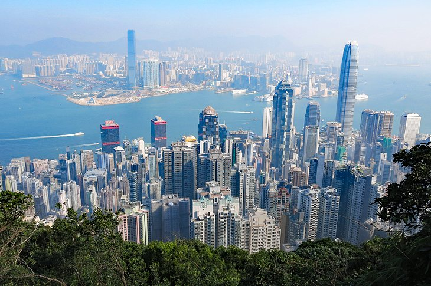

HONGKONG TOURIST PLACES TO VISIT
|  | HONGKONG CITY,HONGKONG1. Hong Kong is famous for towering skyscrapers. Did you know 40 percent of the territory is made up of country park and nature reserves |
 |
BIG BUDDHA STATUE,HONGKONG1. One of Hong Kong’s top sites, the Tian Tan Buddha is a must-see attraction. Visitors will find it on Ngong Ping, Lantau Island where its construction was completed in 1993.2. This giant, bronze statue is an epicenter of Buddhism in Hong Kong and symbolizes the relationship between faith and people, man and nature. 3. It is one of China’s five large Buddha statues. 4. The Giant Buddha is surrounded by six statues which are called, “The Offering of The Six Devas.” FOR MORE INFORMATIPN YOU CAN REFER TO THIS PAGE |
 |
WONG-TAI-SIN-TEMPLE,HONGKONG1. It receives more than 10,000 visitors every day. 2. Although a Taoist temple, it also hosts other major religions in China; Buddhism and Confucianism. 3. It is the sole temple that allows formal weddings within the city. 4. The temple is always almost full. I would advise you visit early in the morning or late in the afternoon after the huge crowds subside. FOR MORE INFORMATION/FACTS/HISTORY/CULTURE PLS REFER TO THIS PAGE |
DISNEP LAND,HONKKONG1. The iconic Disney Castle in Hong Kong Disneyland is the only Disney castle in the world to feature an actual real mountain behind it. 2. There are 3 main languages at the Hong Kong Disneyland, which the staff use to guide people: English, Mandarin, and Cantonese. 3. The first Marvel Disneyland ride opened at the Hong Kong Disneyland. It is called The Iron Man Experience. 4. The most popular attraction at Hong Kong Disneyland is the Slinky Dog Spin, ridden by millions of guests each year. FOR MORE INFORMATION YOU CAN REFER TO THIS PAGE |